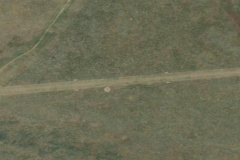

COXS WELL
U48 · ID

Aerial imagery source: Esri, Vantor, Earthstar Geographics, and the GIS User Community
| Identifier | U48 |
|---|---|
| State | ID |
| Runway length | 2,700 ft |
| Runway width | 100 ft |
| Surface | TURF |
| Runway | 07/25 |
| Elevation | 5,048 ft |
| Ownership | public |
| CTAF | 122.9 |
| Coordinates | 43.21775, -113.22755555 |
Notes
[idaho_itd] State Airfield [shortfield] Location Overview Cox's Well (U48) sits in a wide, open expanse of high desert about 23 miles southwest of Atomic City, Idaho, in the sparsely populated Snake River Plain. The surrounding terrain is flat sagebrush steppe punctuated by volcanic features, including nearby Big Southern Butte, and the strip lies within reach of Craters of the Moon National Monument's lava fields. Access by road is limited and rough, which keeps the area feeling isolated even though it's not tucked into mountainous backcountry like many of Idaho's other airstrips. Camping & Recreation Cox's Well is classified as a "primitive" airstrip, meaning it has only basic features like a windsock and runway markers rather than developed visitor amenities. There are no formal campgrounds, restrooms, water, or fuel on site, so any camping here is rustic, self-supported backcountry camping directly off the runway. The appeal for recreational pilots is largely the desert scenery, solitude, and proximity to volcanic landmarks and hiking terrain in the Craters of the Moon area, along with the chance to combine a visit with nearby primitive strips like Big Southern Butte. Notes & Warnings The runway (7/25) is roughly 2,700 feet of turf at an elevation of about 5,048 feet, so pilots should plan for density-altitude effects, especially on warm days. The field has no winter maintenance, no services, and no fuel available, and the surface can be affected by desert vegetation, wildlife, or seasonal conditions typical of an unattended strip. Pilots should self-announce on the CTAF, treat the strip with the caution appropriate for a remote, minimally maintained field, and come prepared with adequate water, sun protection, and awareness that help is not nearby. History Cox's Well has long been part of Idaho's network of backcountry and desert airstrips, informally maintained for decades by state aviation officials and volunteer groups such as the Idaho Aviation Association, which today helps track conditions and coordinate maintenance across strips like this one. Like many small desert fields in this region, its name likely traces back to a stock well dug by an early rancher or homesteader named Cox, reflecting the area's history as sparse rangeland used for grazing before small airstrips were cut into the sagebrush to serve ranchers, surveyors, and later recreational pilots. It remains a lightly used, publicly accessible strip valued mainly for its remoteness and its place within Idaho's broader backcountry airstrip system rather than for any singular historical event.